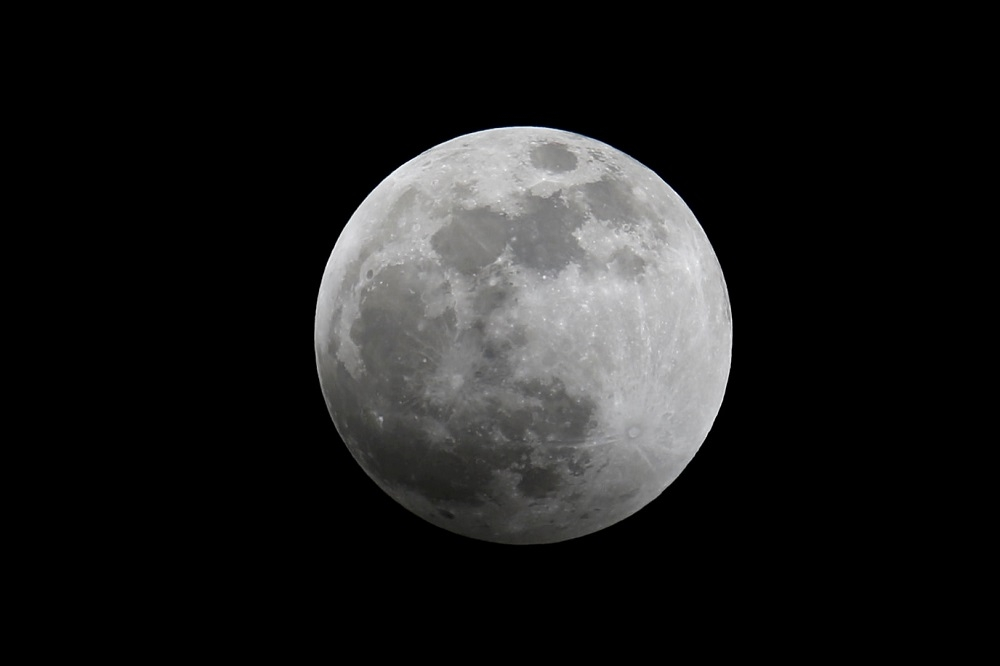

關於本站
歡迎光臨本站。
這裡是介紹月球(MOON)與地球(EARTH)的網站，想多了解月球與地球的有趣小知識，就來網頁探索看看吧
月球(Moon)：是地球的衛星，是第一個被發現的衛星。 月球也是除了地球以外人類踏上的第一片土地。 月球的公轉與自轉週期相同，這意味著月球永遠以同一面朝著地球!! 月球的外觀可以很明顯的看到有黑色與白色的部分。
地球(Earth)：是太陽系中的八大行星之一，距離太陽約1億4960萬公里，是太陽系中直徑、質量和密度最大的類地行星，住在地球上的我們為地球生物圈的一環。 除此之外，又依照固體、液體、氣體將地球分成岩石圈、水圈、大氣圈，構成完整的地球系統。
下方可以自選背景音樂撥放喔~
●（MOON）背景音樂
●（EARTH）背景音樂
※未經許可，請勿擅自複製轉載。
月球&地球
●月球（MOON・）

月球神秘又有趣的十個知識：
01.月亮陰影
02.月亮和睡眠
03.月亮的神秘起源
04.低重力并不是一件好事
05.危险的月塵
06.月球上的奇怪凸起
07.月亮是一个墓地
08.月球垃圾
09.月球並不是繞著地球旋轉
10.神秘的月震
●地球（EARTH・）

地球的九個有趣事實：
01.地球並不是圓的
02.“Earth”起源于盎格魯撒克遜語
03.地球一天並非24小時
04.地球是擁有板塊構造的唯一一顆行星
05.地球曾擁有一個名“忒伊亞”的姊妹行星
06.神秘月球近乎完美的軌道
07.人類未研究的海洋面積超過90%
08.最低溫度：零下89.22攝氏度
09.地球最高點並非珠穆朗瑪峰
影片欣賞
● 101科學教室：月球《國家地理》雜誌
● 101科學教室：地球《國家地理》雜誌